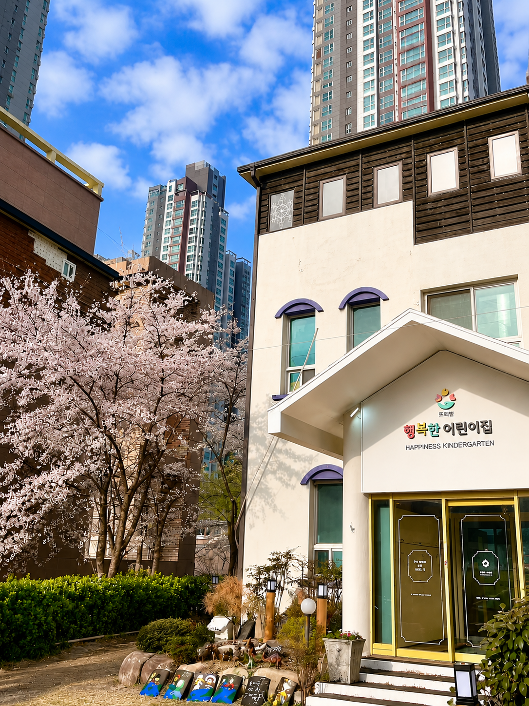
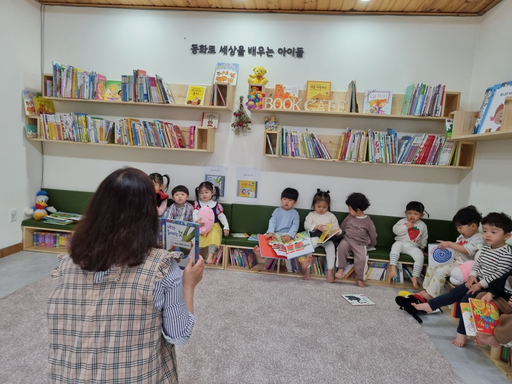
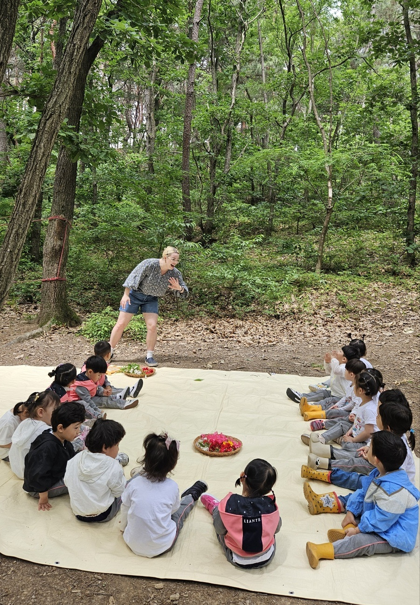
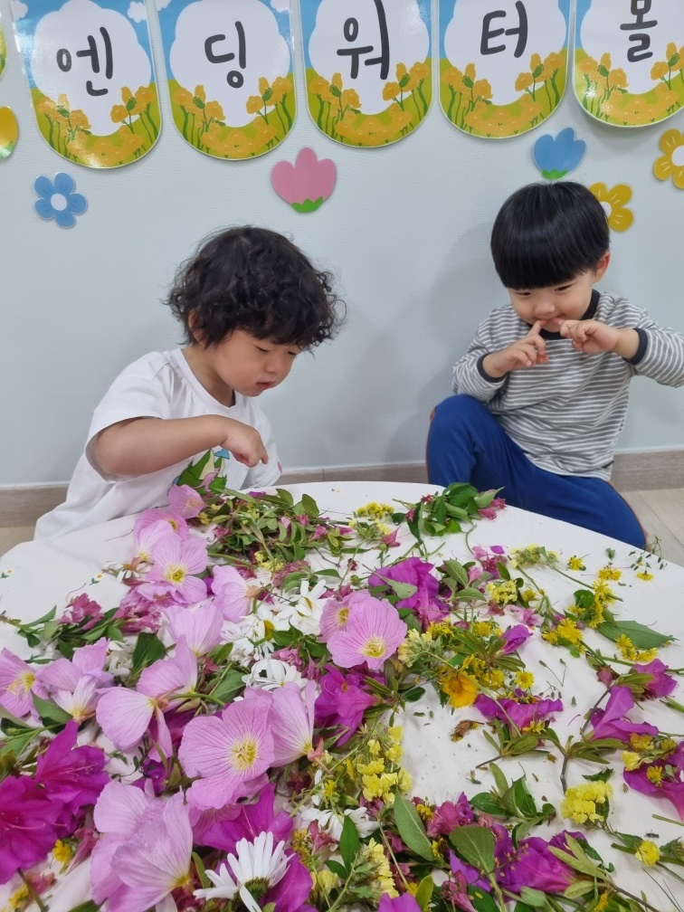
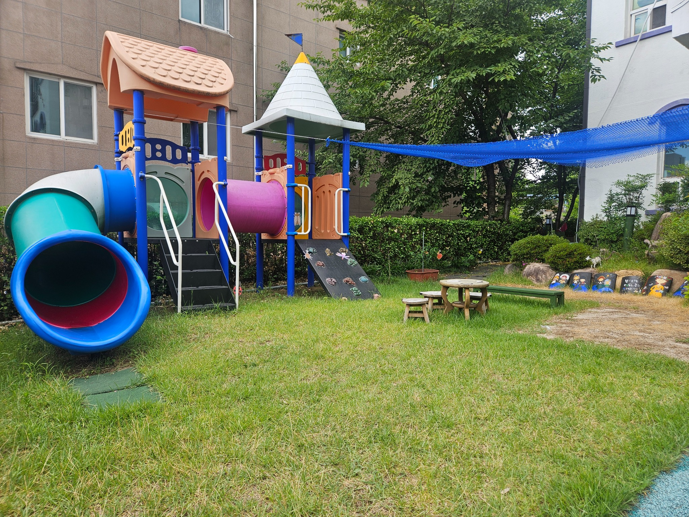
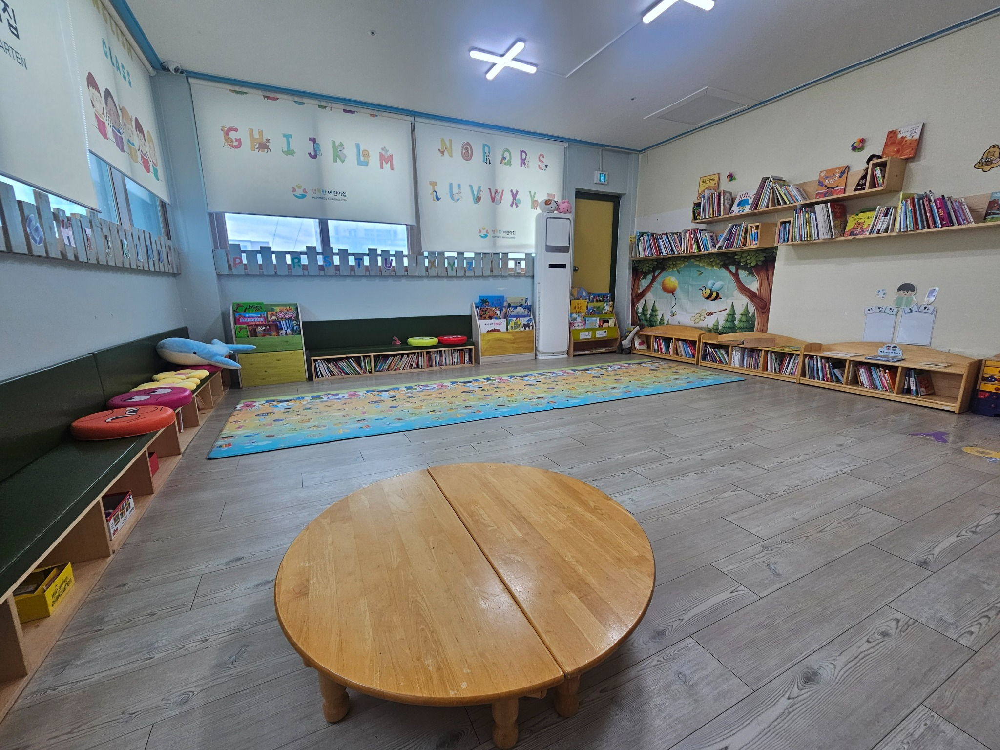

그림책을 통한 푸드오감놀이
이야기 속 재료를 직접 탐색하고 만들고 맛보며 배움을 놀이로 확장합니다.

포항 북구 · 영아 중심 보육
그림책을 읽고, 만지고, 만들고, 맛보며 아이의 하루를 오감으로 채웁니다.
HAPPY FROEBEL
영아의 속도와 생활 리듬을 존중하며, 놀이와 관계 속에서 단단한 첫 성장을 돕습니다.
이야기 속 재료를 직접 탐색하고 만들고 맛보며 배움을 놀이로 확장합니다.
한 권의 그림책을 언어, 미술, 신체, 자연놀이로 풍성하게 이어 갑니다.
자연 속에서 원어민과 함께 움직이고 표현하며 영어를 친근하게 경험합니다.
세 가지 반찬과 신선한 과일로 구성된 균형 잡힌 점심을 제공합니다.

WELCOME TO HAPPY FROEBEL
아이들이 매일 웃으며 오고, 부모님이 안심하며 맡길 수 있는 어린이집을 만들고자 합니다.
영아기의 하루는 아주 작아 보이지만, 그 안에는 관계를 배우고 세상을 탐색하며 자신을 표현하는 수많은 성장이 담겨 있습니다. 행복한 어린이집은 아이마다 다른 발달 속도와 생활 리듬을 존중하고, 놀이 속에서 스스로 발견하고 시도할 수 있도록 기다려 줍니다.
교사와 가정이 아이의 하루를 함께 바라보며, 따뜻하고 안정적인 보육을 이어가겠습니다.
아이의 감정과 표현, 개별적인 생활 리듬을 세심하게 살핍니다.
정답을 알려주기보다 충분히 탐색하고 스스로 발견하도록 돕습니다.
교사와 부모가 신뢰로 연결되어 아이의 성장을 함께 지원합니다.


사진으로 만나는 행복한 하루
한 권의 그림책이 식재료 탐색과 요리, 자연, 미술, 언어놀이로 이어집니다. 아이는 이야기의 주인공이 되어 몸과 마음으로 경험합니다.
대표 프로그램 자세히 보기 →OUR CLASSES
연령별 발달과 생활 리듬을 존중하는 세심한 보육
한 명의 교사가 두 명의 영아를 세심하게 살피며 안정적인 애착과 개별 생활 리듬을 지원합니다.
걷고 탐색하는 즐거움이 커지는 시기에 안전하고 풍부한 놀이 경험을 제공합니다.
말과 놀이가 빠르게 확장되는 시기에 표현하고 스스로 시도하는 힘을 키웁니다.
한 명 한 명의 관심과 발달을 살피며 그림책과 놀이를 깊이 있게 연결합니다.
SIGNATURE PROGRAM
그림책 속 이야기가 아이의 손끝과 입맛, 상상력을 만나 하나의 경험이 됩니다.


NATIVE FOREST DAY
교실에서 외우는 영어가 아니라, 숲길을 걷고 자연물을 관찰하며 생활 속 표현을 자연스럽게 만납니다.
SPECIAL ACTIVITIES
연령과 발달에 맞추어 몸과 언어, 감각을 고르게 경험합니다.
노래와 율동, 그림책과 생활 표현을 통해 영어를 즐겁게 만납니다.
다양한 재료의 색과 향, 질감을 탐색하며 감각 경험을 넓힙니다.

신체를 자유롭게 움직이고 균형감과 자신감을 기르는 즐거운 시간입니다.
※ 특별활동 일정은 어린이집 행사와 계절 프로그램에 따라 조정될 수 있습니다.
SAFETY · HEALTH · MEALS
보이는 곳뿐 아니라 매일 반복되는 운영의 기본까지 세심하게 관리합니다.
OUR SPACES
사진 한 장에 머무르지 않고, 각 공간의 역할과 아이들의 생활이 보이도록 소개합니다.

각 연령의 움직임과 발달 특성을 고려해 놀이 영역을 구성합니다. 익숙한 생활 흐름 안에서 아이가 편안하게 탐색하고 쉬도록 돕습니다.
그림책을 고르고, 함께 읽고, 이야기를 놀이로 이어 가는 책 공간입니다. 매일 책과 자연스럽게 만나는 습관을 키웁니다.
아이들이 몸을 충분히 움직이며 달리고, 오르고, 균형을 잡는 즐거움을 경험합니다.
계절의 변화와 식물, 흙, 바람을 가까이에서 만나며 작은 발견을 차곡차곡 쌓습니다.
다양한 재료를 펼치고 만지고 섞으며, 아이가 마음껏 표현할 수 있도록 넉넉하게 구성한 활동 공간입니다.
HAPPY MOMENTS
행복한프뢰벨어린이집의 살아 있는 하루를 만나보세요.

HAPPY KINDERGARTEN CONNECTION
월 1회 오감노리터를 비롯한 연계활동을 통해 새로운 공간과 선생님, 또래를 자연스럽게 경험합니다. 어린이집에서 유치원으로 이어지는 성장의 흐름을 따뜻하게 돕습니다.
행복한유치원 둘러보기 →ADMISSION & CONTACT
포항시 북구 장량로18번길 68
지도에서 위치 보기